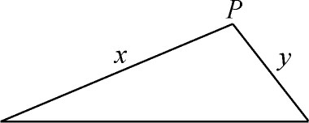
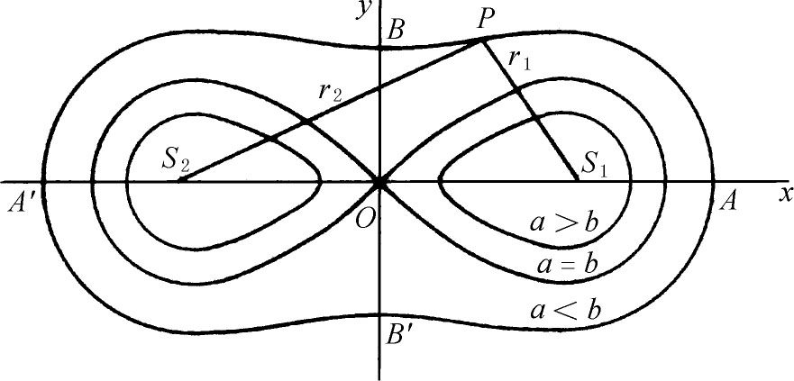
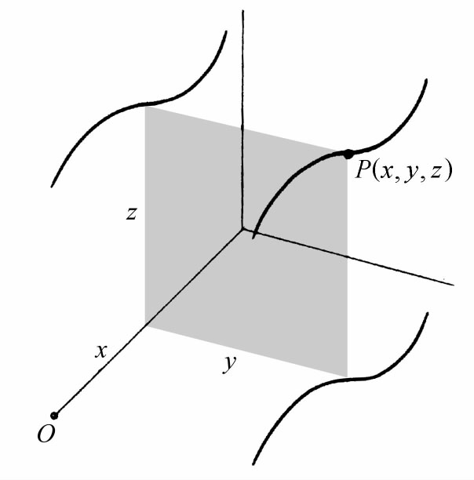
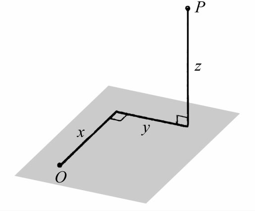

5．坐标几何在17世纪中的扩展
有种种原因，使坐标几何的主要思想——用代数方程表示并研究曲线——没有被数学家热情地接受并利用。费马的《轨迹引论》虽然在他的朋友中得到传播，但迟至1679年才出版。笛卡儿对于几何作图问题的强调，遮蔽了方程和曲线的主要思想。事实上，许多和他同时代的人认为坐标几何主要是解决作图问题的工具，甚至莱布尼茨也说笛卡儿的工作是退回到古代。笛卡儿本人确实知道他的贡献远远不限于提供一个解决作图问题的新方法。他在《几何》的引言中说：“此外，我在第二卷中所作的关于曲线性质的讨论，以及考察这些性质的方法，据我看，远远超出了普通几何的论述，正如西塞罗的词令远远超过儿童的简单语言一样。”但是，他利用曲线方程之处，例如，解决帕普斯问题、求曲线的法线、找出卵形线的性质等，大大地被他的作图问题所遮盖。坐标几何传播速度缓慢的另一原因是笛卡儿坚持要把他的书写得使人难懂。
还有一个原因，是许多数学家反对把代数和几何混淆起来，或者把算术和几何混淆起来。早在16世纪当代数正在兴起的时候，已经有过这种反对的意见了。例如，塔尔塔利亚坚持要区别数的运算和希腊人对于几何物体的运算。他谴责《原本》的译者不加区别地使用multiplicare（乘）和ducere（倍）两字。他说，前一字是属于数的，后一字是属于几何量的。韦达也认为数的科学和几何量的科学是平行的，但是有区别。甚至牛顿也如此，他虽然对坐标几何有贡献，而且在微积分里使用了它，但反对把代数和几何混淆起来，他在《普遍的算术》中说(8)：
方程是算术计算的表达式，它在几何里，除了表示真正几何量（线、面、立体、比例）间的相等关系以外，是没有地位的。近来把乘、除和同类的计算法引入几何，是轻率的而且是违反这一科学的基本原则的……因此这两门科学不容混淆，近代人混淆了它们，就失去了简单性，而这个简单性正是几何的一切优点所在。
对于牛顿的立场的一个合理解释是：他想把代数排斥到初等几何之外，但他也确实知道，代数在处理圆锥截线和高次曲线时是有用的。
使坐标几何迟迟才被接受的又一原因是代数被认为缺乏严密性。我们已经谈到（第13章第2节），巴罗不愿承认无理数除了作为表示连续几何量的一个符号外，还有别的意义。算术和代数从几何得到逻辑的核实，因而代数不能替代几何，或与几何并列。哲学家霍布斯（Thomas Hobbes，1588—1679）虽然在数学里是个小人物，但当他反对“把代数应用到几何的一整批人”时，却代表许多数学家发了言，说这批数学家错误地把符号当作几何。他又认为沃利斯论圆锥曲线的书是卑鄙的，是“符号的结痂”。
上述种种，虽然阻碍了对笛卡儿和费马的贡献的了解，但也有很多人逐渐采用并且扩展了坐标几何。第一个任务是解释笛卡儿的思想。范斯库滕（Frans van Schooten，1615—1660）将《几何》译成拉丁文，于1649年出版，并再版了若干次，这本书不但在文字上便于所有的学者（因为他们都能读拉丁文），而且添了一篇评论，对笛卡儿的精致陈述加以阐发。在1659到1661年的版本中，范斯库滕居然给出坐标变换——从一条基线（x轴）到另一条基线——的代数式。他如此深切地感到笛卡儿方法的力量，以至宣称希腊人就是用这个方法导出他们的结果的。照范斯库滕的说法，希腊人是先由代数工作看出怎样去综合地得出结果——范斯库滕说明如何做到这一步——然后发表那些没有代数方法显明的综合方法来惊世骇俗。范斯库滕可能误解了“分析”（这个词按希腊人的意思是分析某个问题）和“解析几何”（这个词特别描写笛卡儿把代数当作方法使用）的意义。
沃利斯在《论圆锥曲线》（De Sectionibus Conicis，1655）中，第一次得到圆锥曲线的方程。他是为了阐明阿波罗尼斯的结果，把阿波罗尼斯的几何条件翻译成代数条件（就像我们在第4章第12节所做的），从而得到这些方程的。他于是把圆锥曲线定义为对应于含x和y的二次方程的曲线，并证明这些曲线确实就是几何里的圆锥曲线。他很可能是第一个用方程来推导圆锥截线的性质的人。他的书大大有助于传播坐标几何的思想，又有助于普及这样的处理法：把圆锥截线看作平面曲线，而不看作是圆锥与平面的交线，虽然这后一种看法仍继续流传着。此外，沃利斯强调代数推理是有效的，而笛卡儿至少在他的《几何》中实际上依靠几何，认为代数只是一种工具。沃利斯又是第一个有意识地引进负的纵横坐标的人。略晚一些，牛顿也这样做，可能是从沃利斯那里学来的。我们可以比较范斯库滕和沃利斯的说法，沃利斯说，阿基米德和几乎所有的古代人把他们的探索和分析问题的方法对后辈如此保密，使近代人觉得发明一种新的分析法比寻找旧的还要容易些。
牛顿的《流数法与无穷级数》（The Method of Fluxions and Infinite Series）大约于1671年写成，但第一次出版的，却是科尔森（John Colson，死于1760年）的英译本，出版于1736年。此书包括坐标几何的许多应用，例如按方程描出曲线。书中创见之一，是引进新的坐标系。17甚至18世纪的人，一般只用一根坐标轴（x轴），其y值是沿着与x轴成直角或斜角的方向画出的。牛顿所引进的坐标系之一，是用一个固定点和通过此点的一条直线作标准，略如我们现在的极坐标系。书中还包括其他与极坐标有关的思想。牛顿又引进了双极坐标，其中每点的位置决定于它至两个固定点的距离（图15.7）。由于牛顿的这个工作直到1736年才为世人所知，而詹姆斯·伯努利于1691年在《教师学报》（Acta Eruditorum）上发表了一篇基本上是关于极坐标的文章，所以通常认为詹姆斯·伯努利是极坐标的发现者。

图15.7
后来又出现了许多新的曲线和它们的方程。1694年，詹姆斯（雅各布）·伯努利引进了双纽线(9)，这个线在18世纪起了相当大的作用。这条曲线是一大族叫做卡西尼卵形线的一个特例。这族曲线是卡西尼（Jean-Dominique Cassini，1625—1712）引进的，但迟至1749年才由他的儿子卡西尼（Jacques Cassini，1677—1756）发表在《天文学初步》（Eléments d'astronomie）里。卡西尼卵形线（图15.8）的定义是：线上的任何点到两个固定点S1，S2的距离r1，r2的乘积等于常数b2，b是正常数。设S1与S2间的距离是2a，如果b＞a，就得到一个没有自交点的卵形线。如果b＝a，就得到詹姆斯·伯努利所引进的双纽线。如果b＜a，卵形线就分为两个。卡西尼卵形线的直角坐标方程是四次的。笛卡儿自己引进了对数螺线(10)，它的极坐标方程是ρ＝aθ，并且发现了它的许多性质。还有其他曲线，包括悬链线和旋轮线，将在别处谈到。

图15.8
把坐标几何推广到三维空间，是在17世纪中叶开始的。在《几何》的第二卷中，笛卡儿指出，容易使他的想法运用到所有这样的曲线，即可以看作是一个点在三维空间中作规则运动时所产生的曲线。要把这种曲线用代数表示出来，笛卡儿的计划是：从曲线的每个点处作线段垂直于两个互相垂直的平面（图15.9）。这些线段的端点将分别在这两个平面上描出两条曲线，而这两条平面曲线就可用已知的方法处理。在第二卷的靠前一部分里，笛卡儿指出，一个含有三个未知数——这三个数定出轨迹上的一点C——的方程所代表的C的轨迹是一个平面、一个球面，或一个更复杂的曲面。他显然体会到他的方法可能推广到三维空间中的曲线和曲面，可是他没有进一步去考虑这种推广。

图15.9
费马在1643年的一封信里，简短地描述了他的关于三维解析几何的思想。他谈到柱面、椭圆抛物面、双叶双曲面和椭球面。然后他说，作为平面曲线论的顶峰，应该研究曲面上的曲线。“这个理论，有可能用一个普遍的方法来处理，我有空闲时将说明这个方法。”在一篇只有半页长的文章（Novus Secundarum）(11)里，他说，含有三个未知数的方程表示一个曲面。
拉伊尔在他的《圆锥截线新论》（Nouveaux élémens des sections coniques，1679）里，对三维坐标几何作了较为特殊的讨论。为了表示曲面，他先用三个坐标表示空间中的点P（图15.10），然后实际写出了曲面的方程。尽管如此，三维坐标几何的发展，是18世纪里的事，我们以后将讨论到。

图15.10